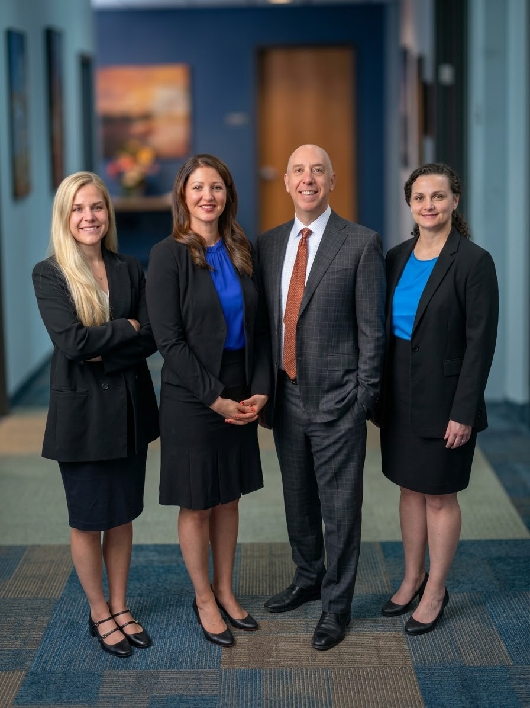

Therapy Clients Becoming Civil Plaintiffs
People who believe a counseling service caused lasting personal or financial damage often face more than one possible response. Therapist Abuse Lawyer can outline how compensation requests, licensing reports, and private negotiations differ, while Therapist Abuse Lawyer may help identify which concerns deserve attention first. The goal is to replace hurried decisions with a clear view of the choices and their likely consequences.
Losses may extend beyond an initial expense. Missed work, interrupted education, relocation, additional care, and changes in daily functioning can all affect the overall picture, so each category should be described in concrete terms. Therapist Abuse Lawyer may help organize these effects, while Therapist Abuse Lawyer can discuss whether proposed terms address the disruption in a meaningful way.
Privacy deserves equal attention. A person may want to understand who could receive sensitive information, how visible a dispute might become, and what arrangements could reduce unwanted contact. Therapist Abuse Lawyer can help weigh those considerations alongside personal safety and financial needs, allowing the next decision to be deliberate rather than driven by urgency.

Distinguishing Abuse From Malpractice
When professional care leaves someone uncertain about the nature of a troubling encounter, the conduct is easier to evaluate when described precisely rather than labeled at the outset. A boundary crossing may involve unwanted personal contact, pressure, misuse of confidential information, or an effort to influence decisions outside the provider's role, while a treatment decision may reflect uncertainty, incomplete information, or a difference in professional judgment. A conversation with Therapist Abuse Lawyer can explain why these situations may be treated differently and which details could alter that view. Consulting Therapist Abuse Lawyer may help a person describe whether the concern involves coercion, a lapse in boundaries, or a disputed care decision.
Context can matter as much as an isolated act. Useful questions may include whether the provider held unusual influence, whether the individual had a meaningful ability to refuse, whether similar conduct affected others, and whether the episode changed access to care or personal security. A discussion with Therapist Abuse Lawyer may help explain how those circumstances are viewed under relevant rules without treating a diagnosis, an unhappy outcome, or a strained relationship as conclusive. If there is an immediate threat, emergency services should take priority; for nonurgent questions involving possible criminal conduct, Therapist Abuse Lawyer can explain which support resources may be appropriate.
People may also need to consider practical consequences that are easy to overlook, including whether continued contact feels safe, whether another provider is available, and how a change in care could affect medication or support. Therapist Abuse Lawyer can explain the considerations involved without pressuring anyone to adopt a particular interpretation. In every case, the individual should retain control over personal information, seek urgent help for immediate danger, and allow enough time to make decisions that fit their circumstances.
Fiduciary Breach In Therapy Relationships
Therapy depends on a client's ability to speak openly without feeling that private disclosures are being used for someone else's benefit. When a provider's personal interests appear to shape recommendations, access, or expectations, the client may reasonably question whether professional responsibilities were honored. Therapist Abuse Lawyer can help identify the legal significance of those circumstances without requiring the person to make a final judgment immediately. A conversation with Therapist Abuse Lawyer may also help clarify what support is needed to continue care safely.
Relevant issues can include undisclosed financial interests, pressure to make a decision quickly, unequal treatment after a client objects, or invitations to rely on the provider outside the agreed service. Therapist Abuse Lawyer may review how those facts fit together and whether the conduct affected the client's freedom to decline, pause, or seek another source of care. The client can ask that future contact be limited to necessary matters and can choose a new provider without explaining every detail before feeling ready. Working with Therapist Abuse Lawyer can make that transition more deliberate and less disruptive.
These situations often involve embarrassment, self-doubt, or concern about being disbelieved, but those reactions do not eliminate the value of seeking guidance. Therapist Abuse Lawyer can help a person prepare for an initial consultation, understand what questions to ask, and decide how much personal information to share at each stage. Support from an independent clinician or trusted person may provide stability while the individual evaluates future care. The goal is a process that respects autonomy, reduces avoidable exposure, and allows decisions to be made at a manageable pace.
Jenner Law Firm
Jenner Law Firm
Baltimore City 3600 Clipper Mill Road, Suite 240 Baltimore, MD 21211
(888) 298-3453